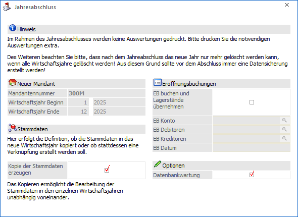
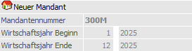
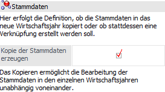
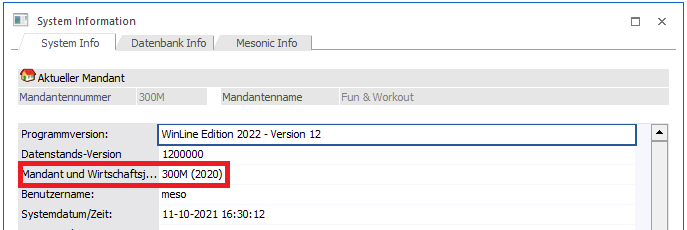
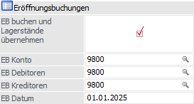
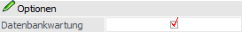
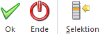

Der Jahresabschluss überträgt die Stammdaten des laufenden Wirtschaftsjahres in das neue Wirtschaftsjahr. Die Daten des alten Wirtschaftsjahres müssen vor der Durchführung des Jahresabschlusses gesichert werden!
Der Jahreswechsel erfolgt zentral im Menüpunkt…
1 WinLine START
1 Abschluss
1 Jahresabschluss
… für alle WinLine Anwendungen (außer WinLine LOHN). Der Jahreswechsel übernimmt hierbei alle sinnvollen Datenbereiche des Ausgangs-Mandanten (altes Wirtschaftsjahr) in das neue Wirtschaftsjahr.
Achtung
Folgende Punkte sind generell beim Jahresabschluss zu beachten:
ü Wirtschaftsjahr
Der
Jahresabschluss steht nur im höchsten Wirtschaftsjahr eines Mandanten zur
Verfügung! Das höchste Wirtschaftsjahr eines Mandanten kann auch nicht gelöscht
werden! D.h. es darauf zu achten, ob nicht ggf. bereits ein entsprechender
Jahresabschluss für ein Jahr durchgeführt wurde!
ü Benutzerberechtigung
Der
Jahresabschluss kann nur von Benutzern geöffnet werden, die entweder Voll-,
Daten- oder Abschlussadministratoren-Rechte besitzen.
ü Datensicherung
Da beim
Jahreswechsel umfangreiche Datenmengen bewegt werden, sollten unvorhersehbare
Ereignisse (Stromausfall, etc.) vorgebeugt und eine Datensicherung durchgeführt
werden!
Achtung
Ein Jahresabschluss kann ohne Datensicherung nicht rückgängig gemacht werden!
ü Nachfolgende Tätigkeiten
Nach
dem Jahresabschluss existiert das neue Wirtschaftsjahr für den Mandant, aber in
den einzelnen Applikationen sind weitere Arbeiten zu verrichten. Weitere
Informationen hierzu können dem Kapitel Jahresabschluss - Exkurs entnommen
werden.

Folgende Einstellung stehen im Zuge des Jahresabschlusses zur Verfügung:
Neuer Mandant

Ø Mandantennummer / Wirtschaftsjahr Beginn / Wirtschaftsjahr Ende
Die WinLine schlägt automatisch die Mandantennummer, sowie den Beginn und das Ende des neuen Wirtschaftsjahres (lt. Einstellung des aktuellen Wirtschaftsjahres plus 1 Jahr) vor.
Hinweis
Handelt es sich beim Jahresabschluss um ein Rumpfwirtschaftsjahr so wird beim Jahresabschluss als "Wirtschaftsjahr Beginn in Periode" die Periode des "von-Monats" verwendet. D.h. das aktuelle Wirtschaftsjahr geht von Periode 1 bis Periode 9 und nach dem Jahreswechsel von Periode 10 bis Periode 9; als Periodenbeginn wird dazu vom Programm automatisch die Periode 10 verwendet.
Stammdaten

Ø Kopie der Stammdaten erzeugen
Mittels Option "Kopie der Stammdaten erzeugen" kann bestimmt werden, ob die Stammdaten im Zuge des Jahresabschluss in das neu anzulegende Wirtschaftsjahr kopiert werden sollen (aktive Option) oder ob die Stammdaten jahresübergreifend verwendet werden sollen (Option nicht aktiv). Je nach Auswahl ändert sich auch der Beschreibungstext.
ü "Kopie der Stammdaten erzeugen"
ist aktiv (Standardeinstellung)
Ist die Option aktiviert, werden im Zuge des
Jahresabschluss die Stammdaten in das neu anzulegende Wirtschaftsjahr kopiert
und können pro Wirtschaftsjahr unabhängig voneinander bearbeitet werden.
ü "Kopie der Stammdaten erzeugen"
ist nicht aktiviert
Ist die Option nicht aktiviert, werden die Stammdaten
nicht kopiert und in weiterer Folge jahresübergreifend verwendet. Somit greifen
etwaige Änderungen auf die Stammdaten aller betroffenen Wirtschaftsjahre.
Hinweis 1
Wenn die Option deaktiviert
wird, erfolgt gleichzeitig die Deaktivierung der Option "Datenbankwartung", da
diese Funktion im Zusammenhang mit "keine Stammdatenkopie erzeugen" keinen
Vorteil bringt. Die Option kann natürlich wieder manuell aktiviert
werden.
Des Weiteren wird bei deaktivierter Option beim Bestätigen des
Jahresabschlusses eine zusätzliche Meldung angezeigt, ob die Stammdaten
zukünfigt jahresübergreifend genutzt werden sollen. Erst wenn diese Bestätigung
mit "Ja" bestätigt wird, erfolgt der Jahresabschluss.
Hinweis 2
Werden die Stammdaten
jahresübergreifend verwendet, so ist dies in der System Information ersichtlich.
Unter Mandant und Wirtschaftsjahr wird jenes Wirtschaftsjahr ausgewiesen, auf
das verwiesen wird.

Eröffnungsbuchungen

Ø EB buchen und Lagerstände übernehmen
Bei Aktivierung dieser Option werden nach dem Jahresabschluss die Eröffnungsbuchungen der WinLine FIBU getätigt, sowie die Lagerstandsübernahme der WinLine FAKT durchgeführt. Hierfür müssen die folgenden Felder mit EB Konten bzw. einem EB Datum versehen werden.
Achtung
Soll ein Rumpfwirtschaftsjahr erzeugt werden, so sollte diese Automatikfunktion nicht genutzt werden! Der Grund hierfür ist, dass das neue Wirtschaftsjahr zunächst als volles Jahr angelegt wird und die Daten der Lagerstandsübernahme intern mit dem Ende des neuen Wirtschaftsjahres abgelegt werden.
Beispiel
Es wird mit einem "ungeraden" Wirtschaftsjahr gearbeitet, welches in 07.2023 startet und in 06.2024 endet. Für dieses wurde bereits eine Lagerstandsübernahme durchgeführt, wobei die Übernahmewerte intern mit 2024 (Ende des Wirtschaftsjahres) abgelegt wurden. Nun soll auf ein "gerades" Wirtschaftsjahr gewechselt werden, was bedeutet, dass das kommende Jahr im Mandantenstamm von "07.2024 - 06.2025" auf "07.2024 - 12.2024" gekürzt werden muss. Würde nun bereits im Zuge des Jahresabschlusses eine Lagerstandsübernahme erfolgen, so würden die Übernahmewerte mit 2025 abgelegt werden, was wiederum bei der Lagerstandsübernahme 2024 (Rumpfwirtschaftsjahr) zu 2025 (gerades Wirtschaftsjahr) zu Komplikationen führen würde.
Ø EB Konto / EB Debitoren / EB Kreditoren
In diesen Eingabefeldern erfolgt die Eingabe der Gegenkonten für die Bildung der Eröffnungsbuchungszeilen. Die Eingabe im Feld "EB Konten" wird hierbei auf die nachfolgenden 2 Felder übernommen, können aber individuell angepasst werden.
Ø EB-Datum
An dieser Stelle wird jenes Datum hinterlegt, mit welchem die Eröffnungsbuchungen (WinLine FIBU und WinLine FAKT) gebucht werden sollen. Dieses muss sich im Bereich des neuen Wirtschaftsjahres befinden.
Optionen

Ø Datenbankwartung
Bei Aktivierung dieser Option wird automatisch beim Jahresabschluss eine Datenbankwartung durchgeführt.
Hinweis
Nachdem beim Jahresabschluss sehr viele Daten bewegt werden, sollte im Anschluss an den Jahresabschluss eine Datenbankwartung durchgeführt werden. Für diese Aktion ist zusätzliche Zeit erforderlich (je nach Größe des Mandanten) und muss daher auch bei der Zeitplanung berücksichtigt werden.
Buttons

Ø Ok
Durch Anwahl des Buttons "Ok" bzw. der Taste F5 wird das neue Wirtschaftsjahr angelegt und alle gewünschten Arbeiten (Eröffnungsbuchungen und / oder Datenbankwartung) durchgeführt.
Hinweis
Nach Abschluss der Arbeiten wird automatisch in das neue Wirtschaftsjahr gewechselt und der Mandantenstamm geöffnet. Hier können u.a. Anpassungen an den Perioden vorgenommen werden.
Ø Ende
Mit Hilfe des Buttons "Ende" bzw. der Taste ESC wird das Fenster geschlossen und kein Jahresabschluss durchgeführt.
Ø Selektion
Durch Anklicken des Buttons "Selektion" wird das Fenster Datenübernahme Selektion geöffnet. In diesem kann Einfluss auf die Daten genommen werden, welche in das neue Wirtschaftsjahr übertragen werden sollen. In der Regel ist keine Anpassung notwendig!
Hinweis
Wurde die Option "Kopie der Stammdaten erzeugen" deaktiviert, so steht der Button "Selektion" nicht zur Verfügung.